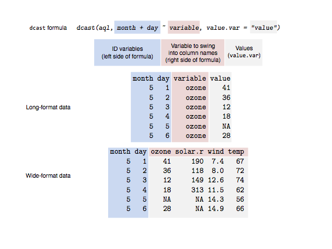
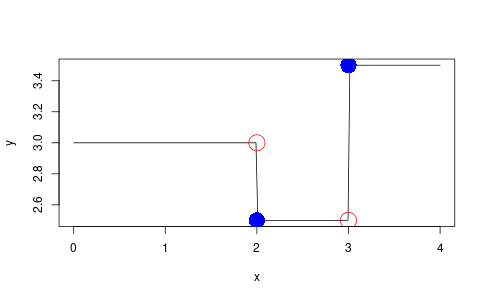
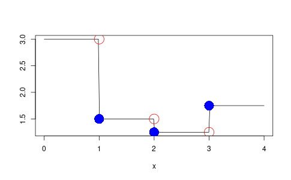
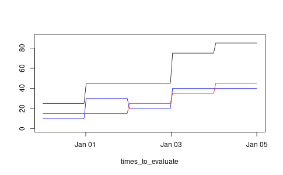
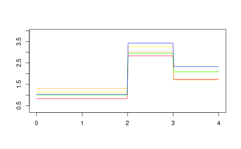

R notes
Table of Contents
- Programming in R (markdown and reproducibility)
- Programming in R (installation and administration)
- Programming in R (software development)
- Linting code
- Debugging
- Scripting with R
- Working with files
- Error handling
- R Packages by Wickham and Bryan
- Packages I like
- Reshaping dataframes with
reshape2 - Command line arguments
- Command line arguments with
argparse - Working with JSON
- Working with HTML
- OUTDATED: Working with XML with
XML - Working with Mustache templates
- Unit testing with
testthat - Dependency management with
packrat - Progress bars with
progress - TODO Argument validation with
checkmate - Package and project management with
usethis - Date handling with
lubridate - String handling with
stringr - Documentation with
roxygen2 - Dates and times
Rmath.h- Cheat sheets
- Programming in R (language and evaluation)
- Data munging
- Statistics with R
- Miscellaneous functions and snippets
- Print function documentation to standard output from command line
- Convert numeric vector into expression
- Function to save a ggplot to both PNG and SVG
- Quantile functions of truncated distributions
- Read BEAST2 log file
- Generating LaTeX summary of GLM
- Mini test suite
- Step function
- Number of lines in a file
- Julian day of the year
- RStudio
- Further reading
Programming in R (markdown and reproducibility)
Quarto
.qmd files can be rendered to HTML or PDF from RStudio or the
command line. To compile these from the command line use the following
quarto render <path/to/file.qmd>
The default settings during PDF generation are the following:
format:
pdf:
documentclass: scrartcl
papersize: letter
Code chunks
When loading libraries, you can avoid messages being printed with the following:
#| message: false
Table of contents
To include a table of contents, extend the preamble:
format:
pdf:
toc: true
Programming in R (installation and administration)
Installing and updating R
Last update was to 4.5.2 – [Not] Part in a Rumble
R updates frequently and things can break, so it is a good idea to keep your version of R reasonably up to date. You can obtain the source code for every version of R from CRAN. The steps involved in getting a particular version of R are as follows.
- Ensure you have the necessary dependencies with
sudo apt-get r-base. - Download the relevant source, e.g.
R-4.2.1.tar.gz, and unzip it:tar -xvf R-X.Y.Z.tar.gz. - Run
./configurebe sure to double check the output for configuration errors.- If you are using this with RStudio, you will need to use
--enable-R-shlib. - If you are using SVG you may need to include
--with-cairo. - If you are using Wayland you might need
--with-x=no. - If you want extra optimisations add
CFLAGS='-O3' CXXFLAGS='-O3' FFLAGS='-O3'
- If you are using this with RStudio, you will need to use
- Run
makeandmake infoto compile R and the documentation.- If you want to speed up compilation,
make -j4runs it in parallel across 4 coures.
- If you want to speed up compilation,
- Check that the compilation has worked properly with
make checkand address any issues that arise. - Install the executable with
sudo make installandsudo make install-info. - Check it worked with
R -e "sessionInfo()". - Profit!
Note that step 3 takes the longest, but this still took less than 20 minutes on
my machine for R-4.1.0. After updating, you'll probably have lost all your
packages, the following command can help with this.
my_pkgs <- c("ape",
"argparse",
"coda",
"cowplot",
"dplyr",
"devtools",
"deSolve",
"future",
"furrr",
"ggplot2",
"htmltools",
"jsonlite",
"phangorn",
"purrr",
"mcmc",
"remotes",
"reshape2",
"stringr",
"targets",
"xml2")
install.packages(my_pkgs)
Last time when I updated the packages it said the default library was not
writable so I used a personal library instead. Running the session with sudo
fixed this. Old package versions hanging around can be found with .libPaths().
Notes
R.4.5.2no problems.R.4.4.2I needed to install a few packages (e.g.libcurl4-openssl-devandlibssh-dev) because this was a new machine, but otherwise, essentially the same as last time.R.4.3.0I needed to installxorg-devprior to configuration to get this working with X (which was needed to get graphics working).R.4.2.3I needed to use--with-x=no(only do this if you absolutely must!) because I don't have X on the new laptop. Sadly, this seems to break plots. Also,make installput the binary in/usr/local/binwhich appeared on the path after the location where the default installation is.R.4.2.1R.4.2.0extends the pipe syntax, and some cases whereifandwhilepreviously threw a warning now throw and error.R-4.1.2R-4.1.0introduces some new syntax:|>for piping and some sugar for anonymous functions, eg\(x) x + 1becomesfunction(x) x+1. After upgrading I could not create plots interactively, instead there was a message aboutunable to start device X11cairo. The fix for this was to set theDISPLAYenvironment variable to:1where it was defaulting to:0.R-4.0.4Having some problems getting ggplot figures with transparency working but only in the PDF output. It hasn't been a problem so far so leaving it until next time. I was prompted to use a personal library for the packages this time, it is at/home/aez/R/x86_64-pc-linux-gnu-library/4.0.R-4.0.2needed me to installlibpcre2-devto get the configuration step to work. I also had to usesudo make installto install the executable where as previously it had not needed this level of permission. Theupdate.packagescommand didn't work as expected this time, which prompted the installation list. I also needed to install a packagebuild-depbefore building this.
Managing R installations
There is an R package, rim, which manages installations: R installation manager.
Managing R packages
Suppose you wanted to install ggplot2 into a personal library at
~/R/library. To do this, you run the following command.
install.packages("ggplot2", lib = "~/R/library")
Then, when you want to load this library, you need to first run the following command so R knows where to look for this package. Note that this will allow you to use other installed packages as well.
.libPaths(c("~/R/library", .libPaths()))
Programming in R (software development)
Linting code
There is the stylr package for formating code. The following script
makes it easy to format every R file in a directory from the command
line.
#!/usr/bin/env Rscript
##
## Usage
## =====
##
## ./formatter.R <path_to_R_file_or_directory>
##
## Styles one R file or all R files in the specified directory.
##
library(styler)
#' Style one R file or all R files in a directory
#'
#' @param path The path to an R file or a directory containing R files.
#'
style_r_files <- function(path) {
if (!file.exists(path)) {
stop(sprintf("Path does not exist: %s", path), call. = FALSE)
}
path <- normalizePath(path, mustWork = TRUE)
if (dir.exists(path)) {
files <- list.files(path, pattern = "\\.R$", full.names = TRUE)
} else if (grepl("\\.R$", path)) {
files <- path
} else {
stop(sprintf("Path is not an R file or directory: %s", path), call. = FALSE)
}
lapply(files, styler::style_file)
if (length(files) > 0) {
cat("Styled files:\n", paste(files, collapse = "\n"), "\n")
} else {
cat("No R files found in the specified directory.\n")
}
}
main <- function() {
args <- commandArgs(trailingOnly = TRUE)
if (length(args) == 0) {
stop("No path specified. Usage: ./formatter.R <path_to_R_file_or_directory>", call. = FALSE)
}
style_r_files(args[1])
}
main()
Debugging
R makes it easy to shoot yourself in the foot, but it also makes it easy to patch your foot up again afterwards.
browser()- to create a breakpoint in your source code
debugonce()- to enter the debugger next time you run a particular function.
Scripting with R
Running system commands with base
system2(command, args = character(),
wait = TRUE,
timeout = 0)
- if
waitis set toFALSEthen this will run asynchronously - if
timeoutis set to a value greater than zero it will kill the process after that amount of time if it has not finished.
system2("ls", args = "/home/aez/Documents")
Running system commands with processx
There is the run command (from the library) which is a convenience function,
otherwise you can use process$new(...) to create an instance of a new process.
Helper function for system commands
The following can be saved to a file and imported if you just need that one function.
message("loading the run_command function.")
#' Helper function for running system commands.
#'
#' Example
#' > run_command("stack build")
#' > run_command("Rscript R/make-simulation-configuration-1.R")
#'
run_command <- function(cmd, silent = TRUE, ...) {
message(sprintf("\nRunning command:\n\t%s", cmd))
tmp <- unlist(strsplit(cmd, " "))
cmd_name <- head(tmp, 1)
cmd_args <- tail(tmp, -1)
std_val <- if (silent) {
FALSE
} else {
""
}
result <- system2(
cmd_name,
args = cmd_args,
stdout = std_val,
stderr = std_val,
...
)
if (result != 0) {
stop(sprintf("command %s failed!", cmd))
}
return(NULL)
}
Working with files
In addition to the built-in functions described in this table, there is a package fs which aims to provide a consistent interface across operating systems and may be more appropriate if you are doing a lot of file manipulation.
| Function | Use |
|---|---|
tempfile |
create temporary file |
basename |
get the file's name |
dirname |
get the file's directory |
file.exists |
predicate for file existance |
dir.exists |
predicate for directory existance |
Error handling
Hadley has a nice description of how to handle these things in more detail, but here is a small example (from him)
show_condition <- function(code) {
tryCatch(code,
error = function(c) "error"
)
}
show_condition(stop("!")) # evaluates to the string "error"
show_condition(10) # evalates to the numeric 10
R Packages by Wickham and Bryan
There is a new edition of the R packages book available online. Here are some notes about package creation based on reading through that book. R Packages tries to be friendly for those getting started and Writing R Extensions is the definitive reference.
Package development loop
library(devtools)create_package("~/path/to/my/package")to set up the packageuse_git()use_r("funky")will set up an appropriate file for the named function. The standard is to useR/funky.R.load_all()to bring the functions into the REPL to check ituse_mit_license("Alexander E. Zarebski")- Edit the
DESCRIPTION document()check()to check the package worksinstall()to install on the current machine- Testing:
use_testthat()use_test("funky")to template a test for thefunkyfunctiontest()to run the tests- See these notes for details on how to write tests.
use_package("package_name")adds the named package as a dependency.use_readme_rmd()sets up a README.uninstall("<package>")to uninstall<package>
This information is also summarised in Section 1.20.
Package dependencies
The DESCRIPTION file is the place to go! Hadley says: add
dependencies foo and bar with use_package("foo", "bar"). Use
usethis::use_package as they have deprecated devtools::use_packag.
usethis::use_package("foo", "bar")
The DESCRIPTION will now have the following entry added
Imports:
foo,
bar
If the package depends on a specific version of the package this can be added too.
Imports:
foo (>= 0.2),
bar (>= 0.3.0.1)
Vignettes
Create a template vignette with usethis::use_vignette.
There is an R Markdown Cheat Sheet
Packages I like
ape Analyses of Phylogenetics and Evolution
deSolve Solvers for Initial Value Problems of Differential Equations
magrittr a forward pipe operator for R
There are many useful aliases exported by magrittr, the table below has some examples.
| Alias | Function |
|---|---|
extract |
`[` |
extract2 |
`[[` |
use_series |
`$` |
is_in |
`%in%` |
is_greater_than |
`>` |
set_colnames |
`colnames<-` |
styler Non-Invasive Pretty Printing of R Code
truncnorm Truncated Normal Distribution
Reshaping dataframes with reshape2
Casting
Casting is difficult, this figure made by Sean C. Anderson helps

Command line arguments
The simplest example is probably what you'll need most of the time
## demo.R
args <- commandArgs(trailingOnly = TRUE)
print(args)
As an example consider the following command and output
$ Rscript demo.R 3 foo.csv
[1] "3" "foo.csv"
Be careful when passing in numbers because they are read in as strings.
Command line arguments with argparse
See the vignette.
library(argparse)
# create parser object
parser <- ArgumentParser()
parser$add_argument(
"-v",
"--verbose",
action = "store_true",
default = FALSE,
help = "Verbose output"
)
parser$add_argument(
"-s",
"--seed",
type = "integer",
default = 1,
help = "PRNG seed"
)
parser$add_argument(
"-p",
"--parameters",
type = "character",
help = "Filepath to parameters JSON"
)
args <- parser$parse_args()
Working with JSON
For parsing and encoding JSON there is the jsonlite package.
WARNING: by default jsonlite::write_json only uses 4 digits which is not
enough for many scientific applications, unless there is a good reason not to,
it is probably better to set digits = 16.
Examples
library(jsonlite)
read_json(<filepath>)
write_json(<object>, <filepath>, pretty = TRUE)
There are the toJSON and fromJSON functions but they are not needed most of
the time.
Working with HTML
There is the htmltools package for generating HTML in R.
Example
library(htmltools)
my_html <-
tags$html(
tags$head(tags$title("My Title")),
tags$body(
tags$h1("Hello"),
tags$div(
tags$h3("Hello World"),
tags$img(src = "the-world.png"),
tags$p("What a wonderful world!")
)
)
)
save_html(
doRenderTags(my_html),
file = "world.html"
)
produces the following HTML
<!DOCTYPE html>
<html lang="en">
<head>
<meta charset="utf-8"/>
<style>body{background-color:white;}</style>
</head>
<html>
<head>
<title>My Title</title>
</head>
<body>
<h1>Hello</h1>
<div>
<h3>Hello World</h3>
<img src="the-world.png"/>
<p>What a wonderful world!</p>
</div>
</body>
</html>
</html>
Example: embedding PNG as string in HTML
The following function is useful if you want to avoid referencing external files in your HTML but still want to include figures.
#' An HTML tag encoding an image stored in a PNG.
#'
#' This uses the \code{base64enc} and \code{htmltools} packages.
#'
#' @param filepath is the path to the PNG
#' @param ... is additional arguments to \code{tags$img} such as style.
#'
png_as_img <- function(filepath, ...) {
if (tools::file_ext(filepath) == "png") {
b64 <- base64enc::base64encode(what = filepath)
tags$img(
src = paste("data:image/png;base64", b64, sep = ","),
...
)
} else {
stop("Filepath given to png_as_img must be a PNG.")
}
}
Example: including a table representation of a dataframe
#' An HTML tag encoding a data frame as a basic table.
#'
#' This uses the \code{xtable} package to generate the HTML for the table.
#'
#' @param df data.frame to create an table from
#' @param ... additional parameters for \code{xtable::xtable}.
#'
df_as_table <- function(df, ...) {
tmp_file <- tempfile()
print(xtable::xtable(df, ...),
type = "html",
file = tmp_file)
return(tags$div(includeHTML(tmp_file)))
}
OUTDATED: Working with XML with XML
NOTE: It looks like xml2 might be a better choice for XML work,
please see these notes instead.
Example I
The following snippet produces a file demo.xml
library(XML)
kappa_node <- xmlNode(
"kappa",
attrs = list(idref = "hky.kappa")
)
input_node <- xmlNode(
"input",
kappa_node,
attrs = list(spec = "HKY", id = "hky")
)
z <- xmlNode(
"beast",
input_node,
attrs = list(version = "2.0",
namespace = "beast.core:beast.evolution.operators")
)
saveXML(
z,
file = "demo.xml",
prefix = "<?xml version=\"1.0\" encoding=\"UTF-8\" standalone=\"no\"?>\n"
)
And here is the result
<?xml version="1.0" encoding="UTF-8" standalone="no"?>
<beast version="2.0" namespace="beast.core:beast.evolution.operators">
<input spec="HKY" id="hky">
<kappa idref="hky.kappa"/>
</input>
</beast>
Example II
Given an XML file, demo.xml, we can read that into a list-like object:
library(XML)
xmlToList(xmlParse("demo.xml"))
Example III
We can read in the XML, edit one of the nodes by indexing into the object and replacing it, and then write it back to another file.
library(XML)
foo <- xmlTreeParse("demo.xml")$doc$children
bappa_node <- xmlNode(
"bappa",
attrs = list(idref = "hky.bappa")
)
foo[["beast"]][["input"]][["kappa"]] <- bappa_node
saveXML(
foo$beast, # <-- need to specify the node.
file = "demo-again.xml",
prefix = "<?xml version=\"1.0\" encoding=\"UTF-8\" standalone=\"no\"?>\n"
)
Example IV
We can use XPath syntax to extract a particular node and then query its attributes.
foo <- xmlTreeParse("demo.xml")$doc$children$beast
kappa_node <- getNodeSet(foo, "//kappa[@idref='hky.kappa']")[[1]]
xmlGetAttr(kappa_node, "idref")
Working with Mustache templates
Example
library(whisker)
template <- readLines("./template.html")
data <- list( name = "Chris"
, value = 10000
, taxed_value = 10000 - (10000 * 0.4)
, in_ca = TRUE
)
writeLines(whisker.render(template, data), "./output.html")
where template.html might look like the following
Hello {{name}}
You have just won ${{value}}!
{{#in_ca}}
Well, ${{taxed_value}}, after taxes.
{{/in_ca}}
Unit testing with testthat
Here are the functions listed in Table 1 of the testthat paper by Hadley.
expect_true(x) # takes a logical.
expect_false(x)
expect_is(x, y)
expect_equal(x, y) # has a tolerance argument.
expect_equivalent(x, y)
expect_identical(x, y)
expect_matches(x, y)
expect_output(x, y)
expect_message(x, y)
expect_warning(x, y)
expect_error(x, y) # y is an regex for a error message.
Dependency management with packrat
Packrat is developed by the team at RStudio. It relies on the notion of a project, which we might think of as a single analysis or collection of related analyses. A project should live in a single directory.
Usage
To start a packrat project use
packrat::init()
This creates a directory packrat and a .Rprofile file. The profile file is
how R knows to use the private library rather than the shared one. There is a
file packrat/packrat.lock which contains the package details.
Packages are installed as usual with install.packages, but now they will be
stored in the private packrat library. Packages are not added to the
packrat.lock file until a snapshot of the current packages is made
packrat::snapshot()
If you want a status report from packrat about how the packages there is
packrat::status. To install local packages, packrat needs to be told where
they live
packrat::set_opts(local.repos = "<path/to/package>")
When moving a project between machines the installed packages will probably
break. However, the packrat directory stores copies of the source for each of
the packages so they can be restored.
packrat::restore()
Version control
The following files should be included into version control:
.gitignorecan containpackrat/libandpackrat/src..Rprofilepackrat/packrat.optspackrat/packrat.lock
The following explaination of the directory structure is given in the walkthrough
A packrat project contains a few extra files and directories. The
init()function creates these files for you, if they don’t already exist.
packrat/packrat.lock: Lists the precise package versions that were used to satisfy dependencies, including dependencies of dependencies. (This file should never be edited by hand!)packrat/packrat.opts: Project-specific packrat options. These can be queried and set withget_optsandset_opts; see?"packrat-options"for more information.packrat/lib/: Private package library for this project.packrat/src/: Source packages of all the dependencies that packrat has been made aware of..Rprofile: Directs R to use the private package library (when it is started from the project directory).
Progress bars with progress
library(progress)
print("starting loop...")
pb <- progress_bar$new(total=10)
for (x in 1:10) {
Sys.sleep(1)
pb$tick()
}
print("done.")
TODO Argument validation with checkmate
Package and project management with usethis
- Add dependencies to packages with
usethis::use_packageinstead ofdevtools::use_packagewhich is now deprecated. It is the same deal withuse_vignette.
Date handling with lubridate
You may think you don't need to use this, but you are probably wrong. It won't take long before you need something that is painful to do in base date types, you may as well start out using this. It's part of the tidyverse, so it's safe.
Key data types for lubridate
- An instant is an exact point in time,
- an interval is the length of time between two instants,
- a duration is the number of seconds between to instants,
- a period is the length of time measured in units bigger than seconds (and hence only has a relative value).
String handling with stringr
Strings are another place where the built-in support is sufficient, but
unpleasant to work with. The stringr package from the tidyverse makes this
much easier and is organised to work well with the modern piping style.
| function | use |
|---|---|
str_detect |
match like grepl, returning matches |
str_flatten |
flatten like paste |
str_interp |
string interpolation like sprintf |
str_replace |
substitution like gsub |
str_split |
split like strsplit |
str_subset |
filters strings like grep |
str_extract |
extracts pattern match |
str_to_lower |
converts to lower case |
Documentation with roxygen2
R Packages: Function documentation
| style | markup |
|---|---|
| italics | \emph{} |
| bold | \strong{} |
| mono-spaced | \code{} |
Here is an example from R Packages:
#' Remove duplicated strings
#'
#' `str_unique()` removes duplicated values, with optional control over
#' how duplication is measured.
#'
#' @param string Input vector. Either a character vector, or something
#' coercible to one.
#' @param ... Other options used to control matching behavior between duplicate
#' strings. Passed on to [stringi::stri_opts_collator()].
#' @returns A character vector, usually shorter than `string`.
#' @seealso [unique()], [stringi::stri_unique()] which this function wraps.
#' @examples
#' str_unique(c("a", "b", "c", "b", "a"))
#'
#' @export
str_unique <- function(string, ...) {
...
}
For some mysterious reason, when you document a package and build a PDF of the manual it will include documentation for functions that you have not exported. There will be documentation for functions that are not made available to the user!
The solution appears to be to remove the corresponding .Rd files
from man/ and then to build the manual from the remaining files. If
you do not want to do this manually, the following script might help.
WARNING: this assumes that you are only putting one function per
file.
my_namespace <- readLines("NAMESPACE")
my_exported <- gsub(
"export\\((.*)\\)",
"\\1",
grep("export", my_namespace, value = TRUE)
)
all_my_rd_files <-
list.files("man", pattern = "\\.Rd$", full.names = TRUE)
not_exported_mask <-
!gsub("man/(.*)\\.Rd", "\\1", all_my_rd_files) %in% my_exported
file.remove(all_my_rd_files[not_exported_mask])
Dates and times
as.Date is your friend.
| Code | Value |
|---|---|
%d |
Day (integer) |
%m |
Month (integer) |
%b |
Abbreviated month (string) |
%B |
Month (string) |
%y |
Year (2 digits) |
%Y |
Year (4 digits) |
Rmath.h
/*
To compile and run this I used the following...
$ sudo apt update
$ sudo apt install r-mathlib
$ sudo apt install r-base-dev
$ gcc -o mathlibtest demo.c -lRmath -lm
$ ./mathlibtest
*/
#include <stdio.h>
#define MATHLIB_STANDALONE 1
#include "Rmath.h"
int fib(int n) {
if (n < 2) {
return(1);
} else {
return(fib(n-1) + fib(n-2));
}
}
int main(int ac, char** av)
{
int n;
double foo;
for ( n = 0; n < 10; n = n + 1 ) {
printf("%d\n", fib(n));
foo = dnorm(1.0, 0.0, 1.0, 0);
printf("%f\n", foo);
}
printf("hello, %s\n", "world");
return 0;
}
Cheat sheets
Programming in R (language and evaluation)
Data structures
Hashmap
The environment builtin data structure can be used as a hashmap (since it hashes by default), a.k.a. map, dictionary, loopkup…
my_dict <- new.env(hash = TRUE)
my_dict[["key"]] <- 2
my_dict[["key"]] # will return 2.
High performance computing
Parallel computing
The package furrr provides purrr style functions which run in
parallel. See the following snippet for an example
library(future)
plan(multiprocess)
y <- furrr::future_map(x, ~ f(.x))
WARNING It looks like furrr will kick up a fuss if f attempts to
perform any IO. It's a good way to force the use of pure functions.
Syntax
Conditionals
if (foo) {
print("foo")
} else if (bar) {
print("bar")
} else {
print("baz")
}
Recommended reading
- Bang Bang - How to program with dplyr (explains quotation stuff for dyplr)
- Curly-Curly, the successor of Bang-Bang (new rlang syntax for extending dplyr)
- lookup is an R package from Jim Hester which simplifies the process of reading source code (even for compiled functions).
Memory usage
To get the size of an object x in terms of its memory usage, run the
following command:
print(format(object.size(x), units = "auto"))
You can get a print out of the current memory usage (and trigger a
garbage collection) with the gc function. This can be helpful to
call immediately after calling rm on large objects that are no
longer needed.
Subsetting
The following example is taken from Hadley Wickham's Advanced R
book, and does a nice job of illustrating when we would want to use
drop = FALSE in a subsetting expression.
> a <- matrix(1:4, nrow = 2)
> a
[,1] [,2]
[1,] 1 3
[2,] 2 4
> a[1,]
[1] 1 3
> a[1,, drop = FALSE]
[,1] [,2]
[1,] 1 3
A small quote for Hadley Wickham's Advanced R follows:
The default
drop = TRUEbehaviour is a common source of bugs in functions: you check your code with a data frame or matrix with multiple columns, and it works. Six months later, you (or someone else) uses it with a single column data frame and it fails with a mystifying error. When writing functions, get in the habit of always usingdrop = FALSEwhen subsetting a 2D object. For this reason, tibbles default todrop = FALSE, and[always returns another tibble.
Benchmarking and optimising impementations
This script demonstrates how to use the microbenchmark package in R to
compare the performance of different implementations of the Fibonacci
sequence. There are three different implementations of a function:
fib_recursive, fib_iterative, and fib_memoised.
The script runs two sets of benchmarks:
mb_small: It runs each function 100 times on the input value of 20.mb_large: Measures the performance of the iterative and memoized versions when computing the 150th Fibonacci number. The recursive version is not included because it would take an impractical amount of time to compute.
This demonstrates that the memoized version is faster than the iterative (when evaluated multiple times).
library(microbenchmark)
fib_true <- c(1,1,2,3,5,8,13)
fib_recursive <- function(n) {
if (n <= 2) {
return(1)
} else {
return(fib_recursive(n - 1) + fib_recursive(n - 2))
}
}
fib_iterative <- function(n) {
if (n <= 2) {
return(1)
}
fib_values <- numeric(n)
fib_values[1:2] <- 1
for (i in 3:n) {
fib_values[i] <- fib_values[i - 1] + fib_values[i - 2]
}
return(fib_values[n])
}
memoise <- function(f) {
memo <- new.env(parent = emptyenv())
function(n) {
if (!exists(as.character(n), where = memo, inherits = FALSE)) {
memo[[as.character(n)]] <- f(n)
}
memo[[as.character(n)]]
}
}
fib_memoised <- memoise(function(n) {
if (n <= 2) {
return(1)
} else {
return(fib_memoised(n - 1) + fib_memoised(n - 2))
}
})
stopifnot(all(sapply(X = 1:7, FUN = fib_recursive) == fib_true))
stopifnot(all(sapply(X = 1:7, FUN = fib_iterative) == fib_true))
stopifnot(all(sapply(X = 1:7, FUN = fib_memoised) == fib_true))
mb_small <- microbenchmark(
fib_recursive(20),
fib_iterative(20),
fib_memoised(20),
times = 100L
)
print(mb_small)
mb_large <- microbenchmark(
fib_iterative(150),
fib_memoised(150),
times = 1000L
)
print(mb_large)
Functional programming support
library(magrittr)
library(purrr)
Here is a mapping between common functions in Haskell and their approximate analogue in R. These are mainly for use with lists of vectors.
| Haskell | R (package) |
|---|---|
all |
all |
filter |
keep and discard (purrr) |
map |
map (purrr) |
scanl |
accumulate (purrr) |
TODO Built-in functionality
|>pipes with_for named arguments.\(x) x + 1becomesfunction(x) x+1(but you need to wrap the function in()when using it in a pipeline).
R/Haskell Prelude
## See https://hackage.haskell.org/package/base-4.15.0.0/docs/Prelude.html#v:dropWhile
drop_while <- function(p, xs) {
if (length(xs) == 0) {
xs
} else {
x <- head(xs, 1)
remaining <- tail(xs, -1)
if (p(x)) {
drop_while(p, remaining)
} else {
remaining
}
}
}
## See https://hackage.haskell.org/package/base-4.15.0.0/docs/Prelude.html#v:takeWhile
take_while <- function(p, xs) {
if (length(xs) == 0) {
xs
} else {
x <- head(xs, 1)
remaining <- tail(xs, -1)
if (p(x)) {
c(x, take_while(p, remaining))
} else {
c()
}
}
}
Program flow and control
Ternary operator
ifelse(test, yes, no)
Switch/case/which
This is similar to the match statement in Python.
centre <- function(x, type) {
switch(type,
mean = mean(x),
median = median(x),
trimmed = mean(x, trim = .1))
}
centre(rnorm(100), "mean")
Numbers
options(digits = 20)will cause the REPL to start printing 20 digits of the number.ceilingfloorandroundbehave as expected.signif(significant figures) androundhave adigitsargument which can be used to specify the number of digits to use.- In addition to the vanilla
NA, there are alsoNA_integer_,NA_real_, andNA_character_which might be more explicit in some settings.
Metaprogramming and nonstandard evaluation
The following snippet demonstrates how to get the value of a variable given a string containing its symbol.
There is a synonym as.name which derives from S terminology while "symbol" is LISP lingo.
a <- 1
eval(as.symbol("a"))
This doesn't seem to work unless you have string literals. Instead we can do the following
# this has a syntax error
data.frame(letters[1] = 2)
# this works!
eval(parse(text = sprintf("data.frame(%s = 2)", letters[1])))
Local aliases
The with function provides a way to define local variables based on a data frame
or list, etc.
with(mtcars, mpg[cyl == 8 & disp > 350])
# is the same as, but nicer than
mtcars$mpg[mtcars$cyl == 8 & mtcars$disp > 350]
Object-oriented programming (OOP)
Hadley gives us the following summary of OOP:
OO systems call the type of an object its class, and an implementation for a specific class is called a method. Roughly speaking, a class defines what an object is and methods describe what that object can do. The class defines the fields, the data possessed by every instance of that class. Classes are organised in a hierarchy so that if a method does not exist for one class, its parent's method is used, and the child is said to inherit behaviour. For example, in R, an ordered factor inherits from a regular factor, and a generalised linear model inherits from a linear model. The process of finding the correct method given a class is called method dispatch.
Base R provides three OOP systems: S3, S4 and reference classes (RC). S3 and S4 use functional OOP while RC uses encapsulated OOP. In RC objects are mutable where they were constants in S3/S4. There is also R6 which seems to have been motivated by a desire to remove some rough edges from RC.
There are base objects and OO objects. OO objects have a class
attribute, while base objects do not, (however, the class function
will still return a value.) Every object has a base type which can
be found with the typeof function.
S3
- You can use the
methodsfunction which takes the name of a class as an argument to find a list of the methods available for that class. - Generic functions call an appropriate class-specific implementation, a process called method dispatch.
S4
R6 system
- R6 classes are a popular way to bring traditional OOP to R, they have reference semantics.
- R6 is available on CRAN
- The
R6Classfunction is used to declare classes, the (public)initializefunction is used to create instances of this class with$new. selfis available within the class to describe the current object.- Assignment of fields is done with
<-e.g.,self$foo <- "bar" - Returning
selfinvisibly (invisible(self)) makes methods chainable. - Active bindings are a way to carry out side effects when assigning values which has a syntax which looks like you are just assigning to a field.
- Fields containing reference objects should be set in the
initializemethod unless you want the object to be shared across all instances of the class. - By default, objects get a
clonemethod, which is shallow; deep cloning can be achieved by passingdeep=TRUE. - There was a request for interfaces in R6, however Hadley suggested that this departed from the very minimalist goals of R6 so it will not be implemented.
Data munging
IO with R Data Serialisation (RDS)
RDS provides a simple (and very quick) way to save R objects to disk. This is a binary format and is computationally efficient, but is incompatible with other languages and not human readable, so there is a real trade-off there. It is very easy to use.
obj <- list(foo = "bar")
saveRDS(obj, "demo.rds")
new_obj <- readRDS("demo.rds")
Working with XML
The modern way for working with XML is via the xml2 package.
read_xmlandwrite_xmlfor IO or start a new node from text.xml_text(andxml_set_text) to get the text out of a node (and to modify it).xml_set_attrto set attributes on a node. Note that if you want to set multiple attributes in a single command there is the functionxml_set_attrswhich takes a node and a named vector.xml_add_childto add a child node to a parent.
Example I: creating a node and adding it to existing XML
Start with the following XML in demo.xml
<?xml version="1.0" encoding="UTF-8"?>
<bookstore>
<book>
<title lang="en">Harry Potter</title>
<author>J K. Rowling</author>
<year>2005</year>
<price>29.99</price>
</book>
</bookstore>
then run the following script
library(xml2)
bs <- read_xml("demo.xml")
new_book <- read_xml("<book><title/><author/><year/><price/></book>")
xml_set_attr(
x = xml_find_first(new_book, "//title"),
attr = "lang",
value = "en")
xml_set_text(
x = xml_find_first(new_book, "//title"),
value = "Nineteen Eighty-Four"
)
xml_set_text(
x = xml_find_first(new_book, "//author"),
value = "G Orwell"
)
xml_set_text(
x = xml_find_first(new_book, "//year"),
value = "1949"
)
xml_set_text(
x = xml_find_first(new_book, "//price"),
value = "8.99"
)
xml_add_child(bs, new_book)
write_xml(bs, "demo2.xml")
to get the new file demo2.xml
<?xml version="1.0" encoding="UTF-8"?>
<bookstore>
<book>
<title lang="en">Harry Potter</title>
<author>J K. Rowling</author>
<year>2005</year>
<price>29.99</price>
</book>
<book>
<title lang="en">Nineteen Eighty-Four</title>
<author>G Orwell</author>
<year>1949</year>
<price>8.99</price>
</book>
</bookstore>
Example II: swapping a node for a new one in existing XML
Starting with demo2.xml from the previous example
<?xml version="1.0" encoding="UTF-8"?>
<bookstore>
<book>
<title lang="en">Harry Potter</title>
<author>J K. Rowling</author>
<year>2005</year>
<price>29.99</price>
</book>
<book>
<title lang="en">Nineteen Eighty-Four</title>
<author>G Orwell</author>
<year>1949</year>
<price>8.99</price>
</book>
</bookstore>
we can use the script
library(xml2)
bs <- read_xml("demo2.xml")
new_cd <- read_xml("<cd><title/><artist/><year/></cd>")
xml_set_text(
x = xml_find_first(new_cd, "//title"),
value = "Lateralus"
)
xml_set_text(
x = xml_find_first(new_cd, "//artist"),
value = "Tool"
)
xml_set_text(
x = xml_find_first(new_cd, "//year"),
value = "2001"
)
old_book <- xml_find_first(bs, "//book[title='Harry Potter']")
xml_replace(old_book, new_cd)
write_xml(bs, "demo3.xml")
which produces demo3.xml shown below
<?xml version="1.0" encoding="UTF-8"?>
<bookstore>
<cd>
<title>Lateralus</title>
<artist>Tool</artist>
<year>2001</year>
</cd>
<book>
<title lang="en">Nineteen Eighty-Four</title>
<author>G Orwell</author>
<year>1949</year>
<price>8.99</price>
</book>
</bookstore>
Example III: A helpful function for getting and setting attributes
The functions in this snippet allows you to look up a node with XPath syntax and then read one of the attributes or set its value. There is an optional argument in the former to get the value returned as a numeric.
#' Find the first matching node and return the named attribute
#'
#' @param x the XML document
#' @param xp the xpath
#' @param the attribute
#' @param as_numeric boolean for casting to numeric (default is FALSE)
#'
xml_find_attr <- function(x, xp, attr, as_numeric=FALSE) {
a <- xml_attr(xml_find_first(x, xpath = xp), attr)
if (!as_numeric) {
a
} else {
as.numeric(a)
}
}
#' Find the first matching node and set the named attribute
#'
#' @param x the XML document
#' @param xp the xpath
#' @param attr the attribute
#' @param v the value for the attribute
#'
xml_find_set_attr <- function(x, xp, attr, v) {
n <- xml_find_first(x, xpath = xp)
xml_set_attr(n, attr, v)
}
Example IV: linting/formatting/beautifying XML
If you have the js-beautify node package installed, the following function will
lint a file in place.
#' Format an XML file in place using js-beautify
#'
#' @param x is the filepath
#'
beautify_xml <- function(x) {
system2(command = "html-beautify", args = c("-f", x, "-r"))
}
Joins
There are several ways to join data frames using dplyr, the folling snippet
demonstrates a full join which duplicates records where necessary and will fill
in missing values. Although the data in the joined data frame does not depend on
the order of the arguments, the ordering of the rows does.
foo <- data.frame(x = 1:3, y = letters[1:3])
bar <- data.frame(x = c(2:4,2:4), z = LETTERS[1:6])
dplyr::full_join(foo,bar)
Joining, by = "x"
x y z
1 1 a <NA>
2 2 b A
3 2 b D
4 3 c B
5 3 c E
6 4 <NA> C
7 4 <NA> F
Aggregation
aggregate(formula = Petal.Length ~ Species, FUN = mean, data = iris)
is equivalent to
library(dplyr)
iris %>%
group_by(Species) %>%
summarise(mean_petal_length = mean(Petal.Length))
Selecting columns
See starts_with and ends_with, and matches which takes strings
to describe columns.
Sorting rows
Base R approach
iris[order(iris$Sepal.Length),]
Tidyverse approach
You can use the following command to generate a figure that shows the
rows of iris are certainly not sorted by the length, although they
are sorted by species.
plot(iris$Sepal.Length, col = iris$Species)
The dplyr::arrange function will sort the rows of a data frame based
on a selected column, respecting groupings if the data are grouped.
The following demonstrates how this works.
tmp1 <- iris |>
dplyr::group_by(Species) |>
dplyr::arrange(Sepal.Length, .by_group = TRUE) |>
as.data.frame()
plot(tmp1$Sepal.Length, col = tmp1$Species)
Note that if you forget to group in this way it will just sort all of the rows!
tmp2 <- iris |>
dplyr::arrange(Sepal.Length) |>
as.data.frame()
plot(tmp2$Sepal.Length, col = tmp2$Species)
Renaming columns
If you want to programmatically rename the columns of a data frame the
dplyr::rename_with function takes a function .fn from strings to
strings defining a renaming rule. The columns that this get applied to
are selected with the argument to the .cols argument.
Dictionary style objects
Suppose you have a data frame demo_df that contains a character
column which acts as keys and a numeric column that acts as values. It
would be useful to have this as a data structure that is easy to pull
the values out by key.
Name Population
1 East Midlands 4880094
2 East of England 6348096
3 London 8796628
4 North East 2646772
5 North West 7422295
6 South East 9294023
7 South West 5712840
8 West Midlands 5954240
9 Yorkshire and The Humber 5481431
You can convert this into a named list with the following:
opt_A <- demo_df$Population
names(opt_A) <- demo_df$Name
There is also a nifty built-in for this which avoids the name assignment that some people think smells.
opt_B <- setNames(demo_df$Population, demo_df$Name)
Statistics with R
Latin Hypercube Samples with lhs
randomLHS(n,k)generates \(n\) samples from \([0,1]^{k}\).
GLM
- Here is an example of fitting a negative binomial GLM using the MASS package.
Linear regression lm
Zero-inflated regression
The following snippet demonstrates how to perform a zero-inflated Poisson regression.
library(pscl)
library(boot)
set.seed(1)
n <- 1000
x1 <- rnorm(n = n)
x2 <- rnorm(n = n)
z1 <- rnorm(n = n)
z2 <- rnorm(n = n)
true_prob_zinf <- inv.logit(2 * z1 + 0 * z2)
zero_inflation <- rbernoulli(n = n,
p = true_prob_zinf)
true_count_means <- exp(2 * x1 - 1 * x2 + 1)
maybe_count <- rpois(n = n,
lambda = true_count_means)
y <- ifelse(zero_inflation, 0, maybe_count)
df <- data.frame(y = y,
x1 = x1,
x2 = x2,
z1 = z1,
z2 = z2)
my_zinb <- zeroinfl(formula = y ~ x1 + x2 | z1 + z2,
data = df, dist = "poisson")
true_mean <- true_prob_zinf * 0 + (1 - true_prob_zinf) * true_count_means
plot(log(true_mean), log(fitted(my_zinb)))
abline(0,1)
TODO Mathematical optimisation
Computational geography and cartography
Differential equations with deSolve
Basic SIR example
Simple SIR model
\[ \frac{ds}{dt} = -\beta s i \quad\text{and}\quad \frac{di}{dt} = \beta s i - \gamma i. \]
The following demonstrates how to solve this system with deSolve.
library(deSolve)
sir_diff <- function(time, state, params) {
with(as.list(c(params, state)), {
ds <- - beta * susceptible * infectious
di <- beta * susceptible * infectious - gamma * infectious
list(c(ds, di))
})
}
params <- c(beta = 1.2, gamma = 1)
state <- c(susceptible = 0.99, infectious = 0.01)
times <- seq(from = 0, to = 20, length = 100)
pd <- matrix(nrow = 2, ncol = 2, data = 0)
out1 <- deSolve::ode(state, times, sir_diff, parms = params)
SIR example with C implementation
Then we can implement the differential in C as
/* file sirmod.c */
#include <R.h>
static double params[2];
#define beta params[0]
#define gamma params[1]
/* initializer */
void initmod(void (* odeparams)(int *, double *))
{
int N=2;
odeparams(&N, params);
}
/* Derivatives and 1 output variable */
void derivs (int *neq, double *t, double *y, double *ydot,
double *yout, int *ip)
{
if (ip[0] <1) error("nout should be at least 1");
ydot[0] = -beta*y[0]*y[1];
ydot[1] = beta*y[0]*y[1] - gamma*y[1];
yout[0] = 1.0-y[0]+y[1];
}
/* END file sirmod.c */
Then we need to compile this and load the object for use of deSovle
system("R CMD SHLIB sirmod.c")
dyn.load("sirmod.so")
out2 <- deSolve::ode(state, times, func = "derivs", parms = params,
dllname = "sirmod", initfunc = "initmod", nout = 1,
outnames = "recovered")
MCMC (without Stan)
There is the package mcmc which looks like it does a solid job of the basics,
although it takes an opinionated stance on how this should be done. Be careful
with how you interpret the batch arguments. The interface is designed for
testing out tuning parameters to find something that works; make the most of
this design.
coda is probably what you want to use to check the output beyond basic
diagnostic plots.
Thinning (destructive)
This snippet demonstrates how to subset a data frame. It is a destructive change, but since MCMC samples can be large you may not want the additional cost of creating a copy.
demo_df <- data.frame(x = 1:100, y = rnorm(100))
## take every third sample
thinning_factor <- 3
demo_df <- demo_df[seq(from = 1, to = nrow(demo_df), by = thinning_factor), ]
(Nonparametric) density estimation with KernSmooth
Here is an example looking at how to use KernSmooth.
library(KernSmooth)
set.seed(1)
x <- c(rpois(n = 500, lambda=10),
rpois(n = 500, lambda = 30))
f_x <- function(x, ...) {
0.5 * (dpois(x = x, lambda = 10, ...) +
dpois(x = x, lambda = 30, ...))
}
x_mesh <- 0:100
y_mesh <- f_x(x_mesh)
kde_obj <- bkde(x, bandwidth = 3, range.x = c(0,100), gridsize = 101)
r_kde_samples <- sample(x = kde_obj$x,
size = length(x),
replace = TRUE,
prob = pmax(0, kde_obj$y))
type_char <- c("true", "estimate")
density_df <- data.frame(x = c(x_mesh, x_mesh),
y = c(y_mesh, pmax(0, kde_obj$y)),
type = rep(type_char, each = 101))
sample_df <- data.frame(x = c(x, r_kde_samples),
type = rep(type_char,
each = length(x)))
ggplot() +
geom_histogram(data = sample_df,
mapping = aes(x = x, y = ..density.., fill = type),
bins = 25,
size = 3,
position = "dodge") +
geom_line(data = density_df,
mapping = aes(x = x, y = y, colour = type))
Miscellaneous functions and snippets
Print function documentation to standard output from command line
Here is an example of how to print out the documentation from a function to standard output so you can provide it as plain text. This can be useful when trying to provide this to a coding agent.
Rscript -e 'tf <- utils:::.getHelpFile(help("MCMC", package="adaptMCMC")); cat(tools::Rd2txt(tf), sep="\n")'
Convert numeric vector into expression
# paste0(sprintf("%.3f", <NUMERIC_VECTOR>), collapse = ",")
paste0(sprintf("%.3f", rnorm(n = 10)), collapse = ",")
Function to save a ggplot to both PNG and SVG
#' Save a ggplot to both PNG and SVG.
#'
#' @param filepath is the path to save the plot to.
#' @param plot is the ggplot object to save.
#' @param ... are additional arguments to pass to ggsave.
#'
#' @examples
#' ggsave_plus("plot.png", ggplot() + geom_point(aes(x = 1:10, y = 1:10))
#'
ggsave_plus <- function(filepath, plot, ...) {
if (stringr::str_ends(filepath, ".png")) {
filepath_png <- filepath
filepath_svg <- str_replace(filepath, ".png", ".svg")
} else if (stringr::str_ends(filepath, ".svg")) {
filepath_svg <- filepath
filepath_png <- str_replace(filepath, ".svg", ".png")
}
ggplot2::ggsave(plot, filename = filepath_png, ...)
ggplot2::ggsave(plot, filename = filepath_svg, ...)
}
Quantile functions of truncated distributions
The truncnorm package provides a clean way to work with normal
distributions that have been truncated to a finite range of values. I
wanted the analogous function for the quantile function of the
log-normal distribution but this wasn't in the package. Here is an
implementation and a basic test of such a quantile function.
.qtruncnorm <- function(p, a = -Inf, b = Inf, mean = 0, sd = 1) {
ut_cdf_a <- pnorm(a, mean = mean, sd = sd)
ut_cdf_b <- pnorm(b, mean = mean, sd = sd)
ut_p <- pnorm(a, mean = mean, sd = sd) + p * (pnorm(b, mean = mean, sd = sd) - pnorm(a, mean = mean, sd = sd))
return(qnorm(ut_p, mean = mean, sd = sd))
}
.test_ps <- runif(1000)
stopifnot(
max(abs(.qtruncnorm(.test_ps, a = -1, b = 2, mean = 3) - truncnorm::qtruncnorm(.test_ps, a = -1, b = 2, mean = 3))) < 1e-13
)
.qtrunclnorm <- function(p, a = -Inf, b = Inf, meanlog = 0, sdlog = 1) {
ut_cdf_a <- plnorm(a, meanlog = meanlog, sdlog = sdlog)
ut_cdf_b <- plnorm(b, meanlog = meanlog, sdlog = sdlog)
ut_p <- plnorm(a, meanlog = meanlog, sdlog = sdlog) + p * (plnorm(b, meanlog = meanlog, sdlog = sdlog) - plnorm(a, meanlog = meanlog, sdlog = sdlog))
return(qlnorm(ut_p, meanlog = meanlog, sdlog = sdlog))
}
.test_ps <- seq(from = 0.2, to = 0.9, length = 10)
stopifnot(
max(abs(.qtrunclnorm(.test_ps, a = 0, b = 10^5, meanlog = 3) - qlnorm(.test_ps, meanlog = 3))) < 1e-14
)
.test_ps <- runif(1000)
stopifnot(
!(max(abs(.qtrunclnorm(.test_ps, a = 0, b = 10^3, meanlog = 3) - qlnorm(.test_ps, meanlog = 3))) < 1e-14)
)
stopifnot(
(max(abs(.qtrunclnorm(.test_ps, a = 0, b = 10^5, meanlog = 3) - qlnorm(.test_ps, meanlog = 3))) < 1e-14)
)
Read BEAST2 log file
See the example in the notes here.
Generating LaTeX summary of GLM
We can use the xtable package to generate a table in LaTeX that
displays a sensible summary of estimates. The following function
streamlines this process a little bit.
#' Convert GLM Fit to LaTeX-Ready xtable
#'
#' This function takes a GLM fit object, formats the summary information,
#' and returns an xtable object for LaTeX export.
#'
#' @param fit A GLM fit object obtained through the `glm()` function.
#' @param num_fmt A string indicating the format for numerical values (default is "%f").
#' @param ... Additional arguments passed to xtable.
#'
#' @return An xtable object containing formatted GLM summary data.
#'
#' @examples
#' fit <- glm(mpg ~ wt + hp, data=mtcars, family=gaussian())
#' tab <- glm_fit_as_xtable(fit, num_fmt="%.2f")
#' print.xtable(tab, include.rownames=FALSE, type="latex", file="demo-latex-table.tex")
#'
#' @importFrom xtable xtable
#' @importFrom stats as.data.frame confint summary
#'
glm_fit_as_xtable <- function(fit, num_fmt="%f", ...) {
ns <- c(var = "Variable",
est_and_ci = "Estimate and CI (95%)",
sig = "Significance",
p_val = "Pr(>|t|)")
fs_df <- as.data.frame(summary(fit)$coefficient)[, c(1,4)]
tmp <- confint(fit)
fs_df[[ns['var']]] <- rownames(fs_df)
est_and_ci_fmt <-
sprintf("%s (%s, %s)", num_fmt, num_fmt, num_fmt)
fs_df[[ns['est_and_ci']]] <-
sprintf(est_and_ci_fmt, fs_df$Estimate, tmp[,1], tmp[,2])
fs_df[[ns['sig']]] <-
ifelse(fs_df[[ns['p_val']]] < 0.05 , "*", "")
rownames(fs_df) <- NULL
# Return xtable object
return(xtable(fs_df[ns[c(1,2,3)]],
align = c("l", "l", "r", "c"),
...))
}
This will return an xtable object which still needs to be printed in
a slightly strange way, the following example might help.
library(xtable)
fit <- glm(mpg ~ wt + hp, data=mtcars, family=gaussian())
print.xtable(glm_fit_as_xtable(fit, num_fmt="%.2f"),
include.rownames = FALSE,
type = "latex",
file = "demo-latex-table.tex")
Mini test suite
If you ever wanted to run tests in a script without needing another
package, here is a little function that you can use to do this. It is
configured with the global variable RUN_TESTS.
RUN_TESTS <- TRUE
## Define a little tester function that evaluates an expression and
## stops with a suitable error message if it evaluates to false
tts_test <- function(expr) {
if (RUN_TESTS) {
if (!expr) {
cat("Test expression: ", deparse(substitute(expr)), "\n")
stop("Test failed")
} else {
message("Test passed")
}
} else {
return(invisible())
}
}
Step function
Step function construction
The following snippet defines a vectorised step function.
#' Return a vectorized step function.
#'
#' This function creates a vectorized step function that changes
#' values at specified time points (`ts`). The resulting step function
#' will produce a constant value between each pair of consecutive
#' times in `ts`, and return the corresponding value in `vs` for any
#' given input. If an input value is less than the first time in `ts`,
#' it will return the first value in `vs`. If an input value is
#' greater than or equal to the last time in `ts`, it will return the
#' last value in `vs`.
#'
#' @param ts A numeric vector of times at which the step function
#' changes values. Must be sorted in strictly increasing order and
#' have at least one element.
#' @param vs A numeric vector of values corresponding to the steps.
#' Must have one more element than `ts` because the function needs
#' to cover all time ranges, including values less than the first
#' time and values greater than or equal to the last time.
#'
step_function_factory <- function(ts, vs) {
n <- length(ts)
if (n < 1) {
stop("need at least one step time.")
}
if (all(sort(ts, decreasing = FALSE) != ts)) {
stop("times must be sorted in strictly increasing order.")
}
if (length(vs) != (1 + n)) {
stop("if there are n step times there must be n+1 values.")
}
step_func <- function(x) {
m <- length(x)
y <- numeric(m)
mask <- logical(m)
mask <- x < ts[1]
y[mask] <- vs[1]
if (n > 1) {
for (ix in seq.int(2, n)) {
mask <- (ts[ix-1] <= x) & (x < ts[ix])
y[mask] <- vs[ix]
}
}
mask <- x >= ts[n]
y[mask] <- vs[n+1]
return(y)
}
return(
list(
func = step_func,
times = ts,
values = vs
)
)
}
Here is a demonstration of it in action producing Figure 1
t1s <- c(2.0, 3.0)
v1s <- c(3.0, 2.5, 3.5)
demo1 <- step_function_factory(t1s, v1s)
t2s <- c(1.0)
v2s <- c(1.0, 2.0)
demo2 <- step_function_factory(t2s, v2s)
x <- seq(from = 0, to = 4, length = 200)
y1 <- demo1$func(x)
y2 <- demo2$func(x)
png('step-function-demo.png',
width = 1.618 * 300,
height = 300,
units = "px")
plot(x, y1, 'l', col = 'black', ylab = "", ylim = c(0.5, 3.5))
lines(x, y2, col = 'black')
points(t1s, demo1$func(t1s), col = 'blue', cex = 3, pch = 16)
points(t1s, demo1$func(t1s - 1e-10), col = 'red', cex = 3, pch = 1)
points(t2s, demo2$func(t2s), col = 'blue', cex = 3, pch = 16)
points(t2s, demo2$func(t2s - 1e-10), col = 'red', cex = 3, pch = 1)
dev.off()

Figure 1: Example of step function result.
Applying binary functions to step functions
The class of step functions is closed under the point-wise application of binary functions. What? This means if you have two functions \(f(x)\) and \(g(x)\) which are step functions, then \(h(x) := f(x) + g(x) \) is also a step function, and more generally \(h^{F}(x) := F(f(x), g(x))\) is a step function given some binary function \(F\). This can be implemented as follows
#' Return a vectorised step function resulting from the point-wise application
#' of a binary function to two step functions.
#'
#' @param step_func_a a step function (see \code{step_function_factory}.)
#' @param step_func_b a step function (see \code{step_function_factory}.)
#' @param binary_func a binary function.
#'
map_step_function <- function(step_func_a, step_func_b, binary_func) {
times_c <- sort(union(step_func_a$times, step_func_b$times))
n <- length(times_c)
values_c <- numeric(n + 1)
values_c[1] <- binary_func(
step_func_a$func(step_func_a$times[1] - 1),
step_func_b$func(step_func_b$times[1] - 1)
)
for (ix in seq.int(n)) {
values_c[ix+1] <- binary_func(
step_func_a$func(times_c[ix]),
step_func_b$func(times_c[ix])
)
}
return(step_function_factory(times_c, values_c))
}
Here is a demonstration of it in action producing Figure 2
demo3 <- map_step_function(demo1, demo2, function(x, y) { x / y })
y3 <- demo3$func(x)
t3s <- c(t2s, t1s)
png('step-function-binary-demo.png',
width = 1.618 * 300,
height = 300,
units = "px")
plot(x, y3, 'l', col = 'black', ylab = "")
points(t3s, demo3$func(t3s), col = 'blue', cex = 3, pch = 16)
points(t3s, demo3$func(t3s - 1e-10), col = 'red', cex = 3, pch = 1)
dev.off()

Figure 2: The result of combining two step functions.
And here is another example in which we use date-time objects for the times of the step functions. The resulting figure is shown in Figure 3.
library(lubridate)
ts1 <- ymd_hms(c("2024-01-01 00:00:00",
"2024-01-02 00:00:00",
"2024-01-03 00:00:00"))
vs1 <- c(10, 30, 20, 40)
step_func_a <- step_function_factory(ts1, vs1)
ts2 <- ymd_hms(c("2024-01-02 00:00:00",
"2024-01-03 00:00:00",
"2024-01-04 00:00:00"))
vs2 <- c(15, 25, 35, 45)
step_func_b <- step_function_factory(ts2, vs2)
step_func_c <- map_step_function(step_func_a,
step_func_b,
function(x, y) { x + y })
times_to_evaluate <- seq(from = ymd_hms("2023-12-31 00:00:00"),
to = ymd_hms("2024-01-05 00:00:00"),
length = 100)
result <- step_func_c$func(times_to_evaluate)
png('step-function-dates-demo.png',
width = 1.618 * 300,
height = 300,
units = "px")
plot(times_to_evaluate, result, 'l', col = 'black', ylab = "", ylim = c(0, 90))
lines(times_to_evaluate, step_func_a$func(times_to_evaluate), col = 'blue')
lines(times_to_evaluate, step_func_b$func(times_to_evaluate), col = 'red')
dev.off()

Figure 3: An example using dates as time
A multivariate generalisation of the step function
The multi version of the step function returns a vector of values when evaluated at a single point and a matrix when given a vector of times.
#' Return a vectorized step vector-function.
#'
#' This is similar to the `step_function_factory` function except that
#' it returns a vector-value instead of a single value. The use case
#' for this is to be able to have a distribution of step functions
#' obtained from a posterior sample.
#'
#' @param ts A numeric vector of times at which the step function
#' changes values. Must be sorted in strictly increasing order and
#' have at least one element.
#' @param vs_list A list of numeric vectors of values corresponding to
#' the steps. Each vector must have one more element than `ts`
#' because the function needs to cover all time ranges, including
#' values less than the first time and values greater than or equal
#' to the last time.
#'
step_function_factory_multi <- function(ts, vs_list) {
n <- length(ts)
if (n < 1) {
stop("need at least one step time.")
}
if (all(sort(ts, decreasing = FALSE) != ts)) {
stop("times must be sorted in strictly increasing order.")
}
if (length(vs_list) != (1 + n)) {
stop("if there are n step times there must be n+1 values.")
}
vec_length <- length(vs_list[[1]])
if (!all(sapply(vs_list, function(x) length(x) == vec_length))) {
stop("all vectors in the list must be the same length.")
}
step_func <- function(x) {
m <- length(x)
y <- matrix(numeric(m * vec_length), nrow = m)
mask <- logical(m)
mask <- x < ts[1]
y[mask, ] <- t(replicate(sum(mask), vs_list[[1]]))
if (n > 1) {
for (ix in seq.int(2, n)) {
mask <- (ts[ix - 1] <= x) & (x < ts[ix])
y[mask, ] <- t(replicate(sum(mask), vs_list[[ix]]))
}
}
mask <- x >= ts[n]
y[mask, ] <- t(replicate(sum(mask), vs_list[[n + 1]]))
return(y)
}
return(
list(
func = step_func,
times = ts,
values = vs_list
)
)
}
And here is an example of how to use this.
t4s <- c(2.0, 3.0)
num_funcs <- 5
v4s <- list(rnorm(num_funcs, sd = 0.2, mean = 1),
rnorm(num_funcs, sd = 0.2, mean = 3),
rnorm(num_funcs, sd = 0.2, mean = 2))
vals_range <- v4s |> unlist() |> range()
demo4 <- step_function_factory_multi(t4s, v4s)
x <- seq(from = 0, to = 4, length = 200)
y <- demo4$func(x)
Which produces the following Figure 4.

Figure 4: An example using multivariate values
cols <- c('red', 'orange', 'yellow', 'green', 'blue')
png('step-function-multi-demo.png',
width = 1.618 * 300,
height = 300,
units = "px")
plot(x, y[,1], 'l', col = cols[1], ylim = vals_range + c(-0.5, 0.5), ylab = "", xlab = "")
for (ix in 2:num_funcs) {
lines(x, y[,ix], col = cols[ix])
}
dev.off()
Number of lines in a file
The num_lines_in_file function returns the number of lines in a file which is
useful to help guard against attempting to parse an empty file with read.csv.
num_lines_in_file <- function(fp) {
wc_stdout <- system2(command = "wc", args = c("-l", fp), stdout = TRUE)
as.numeric(head(unlist(strsplit(x = wc_stdout, split = " ")),1))
}
Julian day of the year
#' Julian day of the year
#'
#' > j_day("2014-01-03", "2014-01-01")
#' 3
j_day <- function(date_string, first_day_of_year_string) {
as.integer(as.Date(date_string) - as.Date(first_day_of_year_string)) + 1
}
RStudio
Making it comfortable to work in
- Open the preferences menu: Tools then Global Options.
- In the Code menu enable Vim bindings (obviously).
- In the Appearance menu, make the font and theme comfortable for your eyes.
- In Pane Layout ensure the console and source panes dominate the screen.
Keep in mind the following (default) keybindings:
Alt+Shift+Kshows the keybinding cheatsheetCrtl+1focuses on sourceCtrl+2focuses on the consoleCrtl+Enterruns the selected lines
The Tools menu has a tool for modifying keybindings
Further reading
Blogs
- R Views (the RStudio blog about R).
Books
- R for Data Science by Hadley Wickham has a second (and substantially expanded) edition.
- R Packages (2e) by Hadley Wickham and Jennifer Bryan.